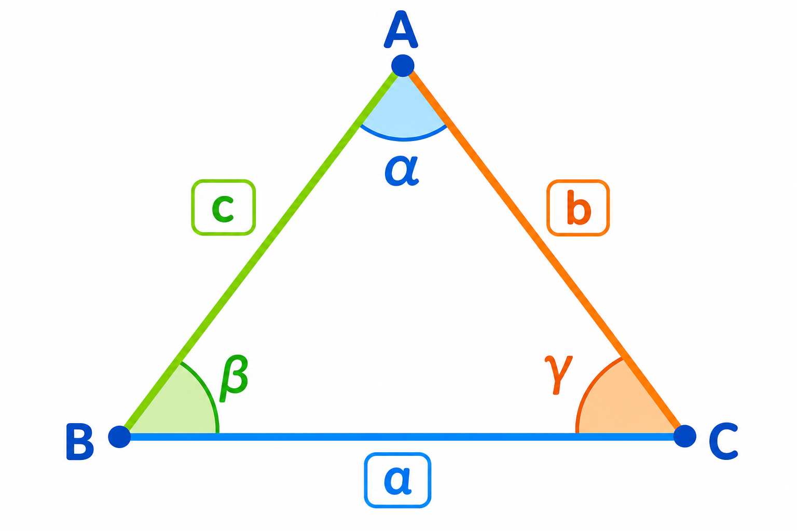

Co to jest? Що це?
Dach jak trójkąt, drzwi i zeszyt jak prostokąt, kafelek jak kwadrat.
Дах як трикутник, двері й зошит як прямокутник, плитка як квадрат.
Jak w szkole? Як у школі?
Nazwij 3 figury w klasie na głos — to już geometria!
Назви 3 фігури в класі вголос — це вже геометрія!
Przykład z życia Приклад з життя
Znaki drogowe i kształty okien. Przykład: dach = trójkąт · drzwi = prostokąt.
Дорожні знаки й форми вікон. Приклад: dach = trójkąт · drzwi = prostokąt.
dach = trójkąт · drzwi = prostokąt